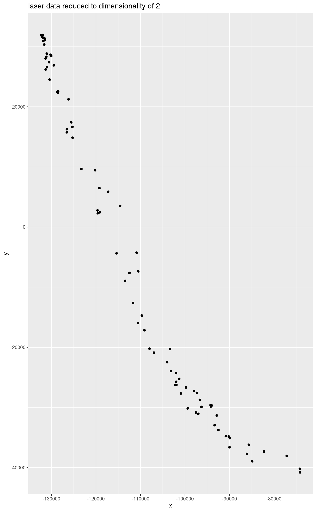
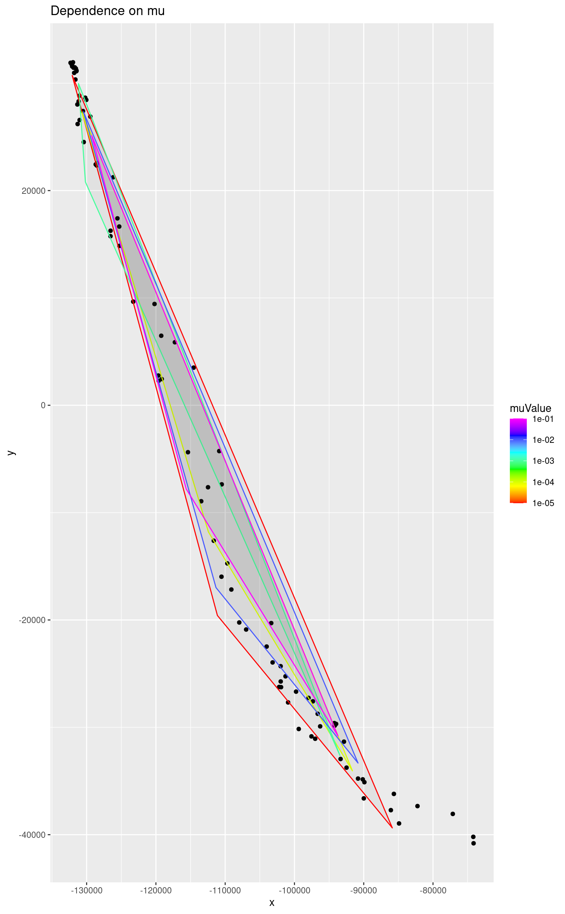
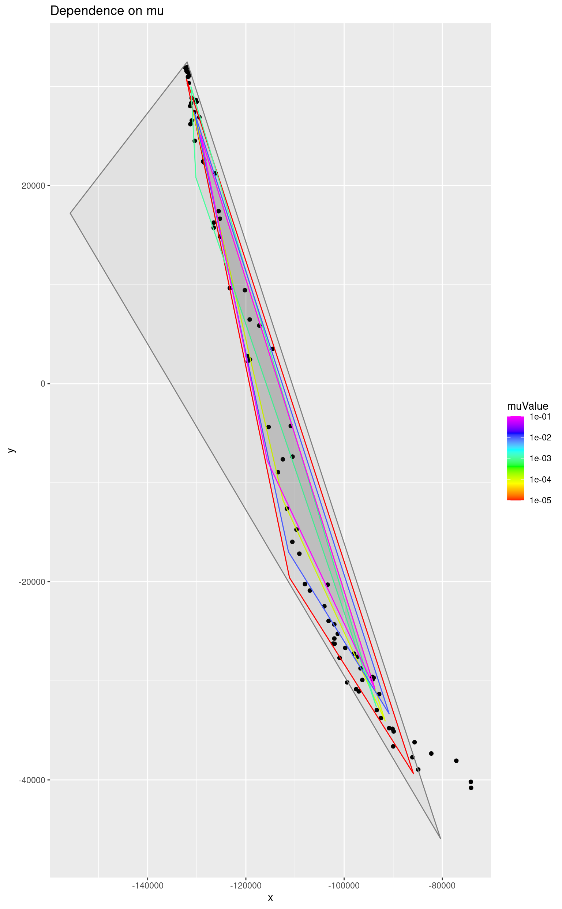

ICE with unmixR
Anton Belov, July 25, 2016
Algorithm Description
Iterative constrained endmembers is an iterative cyclic descent algorithm which converges to an optimal solution for the endmembers. Unlike many other algorithms it does not require pure pixels to be present in the scene. The algorithm makes three steps:
- Estimate abundances
- Estimate endmembers
- Check for convergence
Abundances Estimation
The abundances are calculated via quadratic programing. There are two possible situations. First one is that the assumption is correct. In this case vertices inside the simplex are convex combinations of simplex vertices.
\[\sum_{i=1}^{n}a_{i}x_{i}=r\]
Where \(x_{i}\) is a vertex of a simplex.
A convex combination has following properties
\[\sum_{i=1}^{n}a_{i}=1\] \[0\leqslant a_{i}\leqslant 1\]
A convex combination is also a barycentric one and the coordinates of a point are its barycentric coordinates. To find the coordinates it is enough to solve the following system.
\[\begin{pmatrix} x_{1} & x_{2} & . & x_{n}\\ y_{1} & y_{2} & . & y_{n}\\ . & . & . & .\\ 1 & 1 & . & 1 \end{pmatrix}a = \begin{pmatrix} x_{r}\\ y_{r}\\ .\\ 1 \end{pmatrix}\]
Where \(a\) is a vector of abundances. The last line constrains a sum of coordinates and also makes the combination unique.
But if there are no pure pixels for each of the endmembers then it is possible that a point \(r\) will be outside of the simplex. The barycentric coordinates sum to one but they are not necessarily non-negative. Here are some examples.
Point Inside a Simplex
# vertices of a simplex
a <- c(1, 1)
b <- c(5, 5)
c <- c(6, 2)
m <- cbind(a, b, c)
plot(x = m[1,], y = m[2,])
polygon(x = m[1,], y = m[2,])
# point inside a simplex
p <- c(5, 3)
points(x = p[1], y = p[2])Let’s calculate the abundances.
## a b c
## 0.125 0.375 0.500Least squares with non-negativity constraint.
nnls::nnls(m, p)$x## [1] 0.125 0.375 0.500Ordinary least squares with no constraints. Since the point is inside the simplex they are not required.
limSolve::lsei(A = m, B = p, verbose = FALSE)$X## a b c
## 0.125 0.375 0.500All methods find the same solution. But what will happen if the point is not inside the simplex?
Point Outside a Simplex
m <- cbind(a, b, c)
plot(x = m[1,], y = m[2,])
polygon(x = m[1,], y = m[2,])
p <- c(1, 3)
points(x = p[1], y = p[2])True barycentric coordinates can be found solving the system of linear equations.
## a b c
## 0.875 0.625 -0.500Least squares with non-negativity constraint.
nnls::nnls(m1, p1)$x## [1] 0.75 0.25 0.00Now we have to add both constraints to the least squares method. Note that the matrix m is used not m1. Lsei stands for least squares with equality and inequality constraints. It solves \(\left \| Ax - b \right \|^{2}\) problem with \(Ex=f\) and \(Gx\geq h\) constraints.
The abundances sum to one means
\[\begin{pmatrix} 1 & 1 & ... & 1 \end{pmatrix}\begin{pmatrix} a_{1}\\ a_{2}\\ ...\\ a_{n} \end{pmatrix}=1\]
The abundances are non-negative means
\[\begin{pmatrix} 1 & 0 & . & 0\\ 0 & 1 & . & 0\\ . & . & . & .\\ 0 & 0 & 0 & 1 \end{pmatrix}\begin{pmatrix} a_{1}\\ a_{2}\\ ...\\ a_{n} \end{pmatrix}\geqslant \begin{pmatrix} 0\\ 0\\ ...\\ 0 \end{pmatrix}\]
E = rep(1, ncol(m))
G = diag(ncol(m))
H = rep(0, ncol(m))
limSolve::lsei(A = m, B = p, E = E, F = 1, G = G, H = H, verbose = FALSE)$X## a b c
## 0.75 0.25 0.00The resulting point is the closest point to p from the simplex. In our case it is (2, 2).
## [1] 2 2In this case the function solve is not able to find correct answer, but the two other methods are successful. Let’s consider another point outside a simplex.
m <- cbind(a, b, c)
plot(x = m[1,], y = m[2,])
polygon(x = m[1,], y = m[2,])
p <- c(6, 5)
points(x = p[1], y = p[2])## a b c
## -0.1875 0.9375 0.2500
nnls::nnls(m1, p1)$x## [1] 0.0000000 0.9000000 0.2463415
E = rep(1, ncol(m))
G = diag(ncol(m))
H = rep(0, ncol(m))
abundances <- limSolve::lsei(A = m, B = p, E = E, F = 1, G = G, H = H, verbose = FALSE)$X
abundances## a b c
## 0.0 0.9 0.1The resulting point is the closest point to p from the simplex. In our case it is (5.1, 4.7).
m %*% abundances## [,1]
## [1,] 5.1
## [2,] 4.7Only the last method gives the correct answer.
Endmember Estimation
We assume that pixels are linear combinations of endmembers.
\[Y = MA\]
\[A^{T}M^{T} = Y^{T}\]
However the matrix \(A\) is not square and thus not invertible. To calculate \(M\) we will use left inverse matrix
\[(A^{T})_{left}^{-1} = (AA^{T})^{-1} A\]
\[AA^{T}M^{T} = AY^{T}\]
\[(AA^{T})^{-1}AA^{T}M^{T} = (AA^{T})^{-1}AY^{T}\]
\[M^{T} = (AA^{T})^{-1}AY^{T}\]
To make the model more resistant to noise in data a regularization parameter is used. Further information about regularization parameter can be found in [1].
\[M^{T} =(AA^{T} + \lambda (I - \frac{11^{T}}{m}))^{-1}AY^{T}\]
Laser Dataset Example
## Package hyperSpec, version 0.100.0
##
## To get started, try
## vignette ("hyperspec")
## package?hyperSpec
## vignette (package = "hyperSpec")
##
## If you use this package please cite it appropriately.
## citation("hyperSpec")
## will give you the correct reference.
##
## The project homepage is http://hyperspec.r-forge.r-project.org## Loading required package: MASS## Loading required package: nnls
d <- as.matrix(laser)
Ud <- svd(crossprod(d), nu = 2)$u
reducedData <- d %*% Ud
base::colnames(reducedData) <- c("x", "y")
qplot(data = as.data.frame(reducedData), x = x, y = y,
geom = "point", main = "laser data reduced to dimensionality of 2")
set.seed(1234)
res <- ice(laser, 3)
endm <- res$endmembers
reducedEndmembers <- endm %*% Ud
base::colnames(reducedEndmembers) <- c("x", "y")
ggplot() +
geom_point(data = as.data.frame(reducedData), mapping = aes(x = x, y = y)) +
geom_polygon(data = as.data.frame(reducedEndmembers), mapping = aes(x = x, y = y),
alpha = 0.05, color = "red") +
ggtitle("Ice simplex")
Parameters
Regularization Parameter
This parameter penalizes the model for the simplex size. The regularization technique makes the model less affected by noise in data. The higher the value the bigger the penalty so when it is equal to 1 the simplex shrinks to a single point.
m <- 10^(-1:-5)
m <- c(m, 0)
simplices <- as.data.frame(matrix(ncol = 4))
names(simplices) <- c("x", "y", "muValue")
simplices <- simplices[-1,]
for (i in m) {
res <- ice(laser, 3, mu = i)$endmembers
reducedEndmembers <- as.data.frame(res %*% Ud)
reducedEndmembers <- cbind(reducedEndmembers, rep(i, nrow(reducedEndmembers)))
names(reducedEndmembers) <- c("x", "y", "muValue")
simplices <- rbind(simplices, reducedEndmembers)
}The dependence of the simplex size on the regularization parameter can be seen on the following picture. Since the value is usually very small we consider values equal to powers of 10.
ggplot() +
geom_point(data = as.data.frame(reducedData), mapping = aes(x = x, y = y)) +
geom_polygon(data = head(simplices, -3),
mapping = aes(x = x, y = y, colour = muValue, group = muValue),
alpha = 0.05) +
scale_color_gradientn(colours = rainbow(length(m)), trans = "log10") +
ggtitle("Dependence on mu")
As it was already, stated a very small value is enough to prevent the simplex from being unreasonably large. Here the grey triangle corresponds to a simplex computed without the penalty (mu = 0).
ggplot() +
geom_point(data = as.data.frame(reducedData), mapping = aes(x = x, y = y)) +
geom_polygon(data = simplices,
mapping = aes(x = x, y = y, colour = muValue, group = muValue),
alpha = 0.05) +
scale_color_gradientn(colours = rainbow(length(m)), trans = "log10") +
ggtitle("Dependence on mu")## Warning: Transformation introduced infinite values in discrete y-axis
Tolerance Ratio
The tolerance ratio determines the number of iterations. The algorithm asymptotically approaches the solution and higher values of the parameter mean that the result will be closer to the optimal one and will require more iterations.
t <- c(0.9, 0.99, 0.999, 0.9999, 0.99999)
simplices <- as.data.frame(matrix(ncol = 4))
names(simplices) <- c("x", "y", "tauValue")
simplices <- simplices[-1,]
for (i in t) {
res <- ice(laser, 3, t = i)$endmembers
reducedEndmembers <- as.data.frame(res %*% Ud)
reducedEndmembers <- cbind(reducedEndmembers, rep(i, nrow(reducedEndmembers)))
names(reducedEndmembers) <- c("x", "y", "tauValue")
simplices <- rbind(simplices, reducedEndmembers)
}The value of tau is usually extremely close to 1 and the following plot shows it very well. Four simplices corresponding to lower values differ very much. Simplices which correspond to 0.9999 and 0.99999 differ very little. That means that the algorithm finds the optimal solution having the value of tau not less than 0.999.
ggplot() +
geom_point(data = as.data.frame(reducedData), mapping = aes(x = x, y = y)) +
geom_polygon(data = simplices,
mapping = aes(x = x, y = y, colour = tauValue, group = tauValue),
alpha = 0.05) +
scale_color_gradientn(colours = rainbow(3), values = t) +
ggtitle("Dependence on tau")
As the number of iterations grows so does the calculation time.
tst <- rbenchmark::benchmark(
ice(laser, 3, t = 0.9),
ice(laser, 3, t = 0.99),
ice(laser, 3, t = 0.999),
ice(laser, 3, t = 0.9999),
ice(laser, 3, t = 0.99999))
tst[,1:5]## test replications elapsed relative user.self
## 1 ice(laser, 3, t = 0.9) 100 1.806 1.000 1.805
## 2 ice(laser, 3, t = 0.99) 100 2.986 1.653 2.985
## 3 ice(laser, 3, t = 0.999) 100 3.465 1.919 3.465
## 4 ice(laser, 3, t = 0.9999) 100 3.444 1.907 3.444
## 5 ice(laser, 3, t = 0.99999) 100 3.520 1.949 3.520